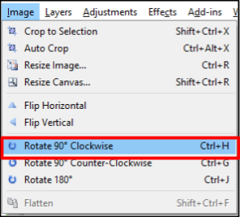
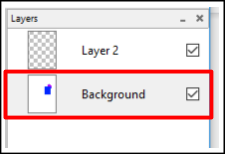
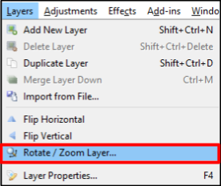
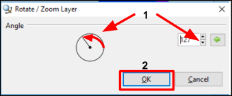
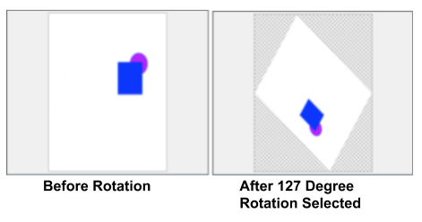

Rotate¶
You can rotate an image by using:
- Rotate Image Preset Degrees: Use to rotate an image by 90 or 180 degrees.
- Rotate Layer Specified Degrees: Use to rotate a layer by a specific degree.
- Rotate using Move Selection Tool: Use this to move a selected portion of an image.
Rotate Image Preset Degrees¶
-
Select the image you want to rotate from the Images window.

-
Go to Image menu and select one of the preset rotations.

- Rotate 90 degrees Clockwise
- Rotate 90 degrees Counter-Clockwise
- Rotate 180 degrees
The following example shows what would happen if Rotate 90 degrees Clockwise was selected:

-
Check that the image has rotated after selecting a preset rotation. If you'd like to unrotate the image, use the undo function.
Rotate Layer Specified Degrees¶
-
Select the layer that you would like to rotate from the Layers window.

-
Go to Layers menu and select Rotate / Zoom Layer.

The Rotate / Zoom Layer dialog box will appear on your screen.

-
From the Rotate / Zoom Layer dialog box:
- Select the level of degree that you'd like to rotate the layer by the following methods:
- Select the dial stick and drag it to move the dial stick until you set the desired degree.
- Enter in the degree number setting directly in the degree box by typing in the degree value.
- Enter in the degree number by using the up and down arrows of the degree box.

- Click OK when the degree amount is the desired value.
The following example shows what would happen if Rotate 127 degrees was selected:

- Select the level of degree that you'd like to rotate the layer by the following methods:
Rotate Using The Move Selection Tool¶
If you only want to rotate a portion of an image, you can use the Move Selected Pixels tool.
For step by step instructions go to the Image Transformations>Move section of this guide.